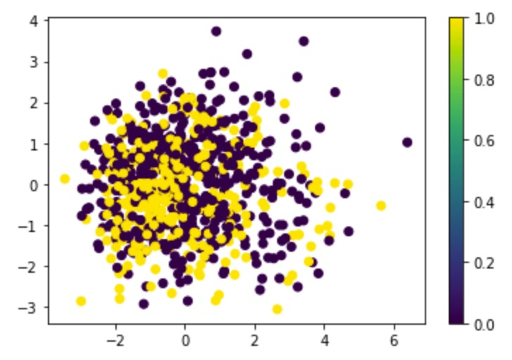
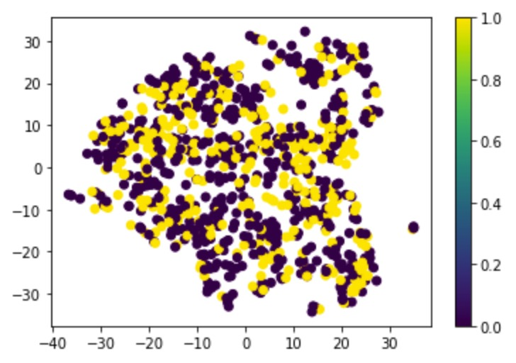
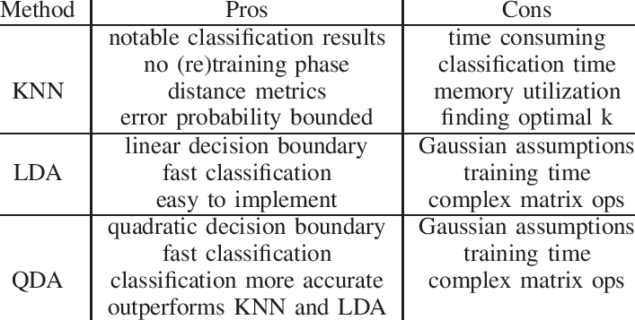
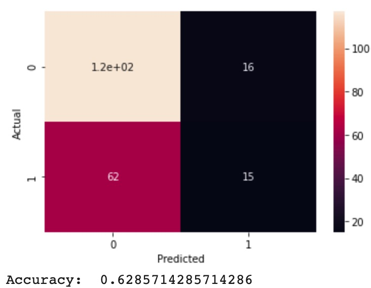
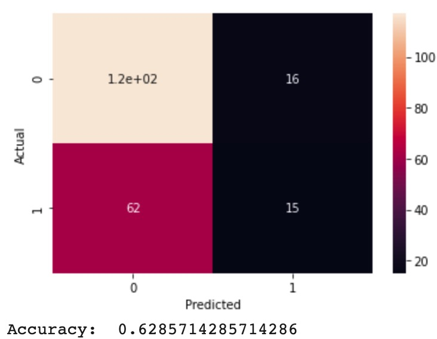
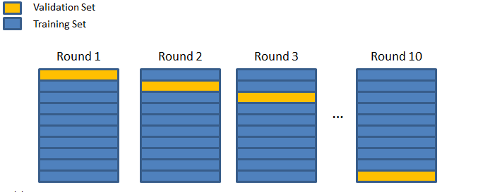

Predicting Top Chart Songs Using Spotify Data
Trevor Garner, Morgan McGuinn, Taylan Selman, Khushi Magiawala, Kira PanchaFall 2020 CS 4641 Machine Learning: Class Project
Georgia Tech
Introduction/Background/Problem Definition
We chose to look at music trends and charts in the United States because of our team’s collective love for music. Our goal is to produce a predictive model using supervised learning. Our product should be able to predict if a certain song will chart in the top 50 of Billboard’s Hot 100 based on certain features. Through this project, we’ll analyze how the world’s music taste has shifted over the last decade. If time permits, we may see which features affect the popularity of a song/track the most. We hope that our predictive model will serve as a solution for upcoming artists trying to figure out what type of song does well on the Billboard Hot 100. Getting a song on this chart increases song and artist exposure: this can lead to record deals and a growth in sales. Record-labels could potentially use our product to reduce resource waste. By figuring out which songs and thus, artists, will chart, the record company can allocate more funds and marketing resources towards that specific release. Creating a predictive model using classification and regression algorithms using data from Spotify and Billboard’s API to analyze what song features are most prominent in the top 50 of Billboard’s H100.Data Collection
Source: https://data.world/kcmillersean/billboard-hot-100-1958-2017We are dealing with two data sets: one from Billboard Hot 100 and one taken from Spotify’s API.


Data Cleaning:
To prepare our data for the learning models, we filtered out any unnecessary variables/features and joined the two data sets on song id. Both the Billboard and spotify data sets originally included thousands of entries. However, once we combined the two data sets and removed duplicate, irrelevant and incomplete entries, our data set was reduced to around 840 entries (data points). A sample of our code for filtering entries from the Billboard set is below:index_names = billboard_df[ (billboard_df['WeekID'] < 2008) | (billboard_df['WeekID'] > 2019) ].index
billboard_df.drop(index_names, inplace = True)
billboard_df.drop_duplicates(subset='SongID', inplace=True)
billboard_df.dropna(axis=0, inplace=True)
Here, we remove entries that did not chart between 2008 and 2019, entries with the same song name, and entries that have any null feature fields. We chose the years 2008 and 2019 because Spotify only came out in 2008, and we know that the data for 2019 is complete, whereas data for 2020 may be updated at different times in the Billboard and Spotify datasets since the year is not over. Dropping duplicate songs is necessary because we only want to consider one time the song charted. This specific script only keeps the first instance of each song in the dataset, which worked for our purposes because there is a column that has the song’s peak position. Therefore, we could’ve kept any arbitrary entry for any given song. Finally, we opted to deal with null columns by removing any rows that had null values. Since there were not many rows that fell under this category, we chose this approach because the information loss would not be too large. However, there are other approaches that we considered that would’ve better dealt with information loss, such as filling in null fields with the most frequent value for that feature, or actually predicting the missing values. The reduction in size of our data set is logical. The spotify data set included songs not included in the billboard set. The billboard data set included an entry for every single week a song had charted, so we chose only to include the peak position of the song. Our final sample size is 839.

Here is a link to our cleaned csv file
After we cleaned our data and selected our features we then applied a Standard Scalar. This approach standardizes each input variable separately by subtracting the mean and dividing by the standard deviation to shift the distribution to have a mean of zero and a standard deviation of one. This is important since machine learning models learn a mapping from input variables to an output variable and as such, the scale and distribution of the data drawn from the domain may be different for each variable. Thus, differences in the scales across input variables may increase the difficulty of the problem being modeled. That is why it was important to standardize our data to ensure a uniform distribution.
Feature Selection and Dimensionality Reduction
Linear Dimensionality Reduction: Principle component analysis

PCA is used to reduce the dimensionality of a dataset, while preserving as much ‘variability’ (i.e. statistical information) as possible. We ran PCA on our data to figure out which features were more significant and if there was a significant variance among data points within the features. We condensed the 8 features into two overall features (one for Top 50 songs, and one for songs not in the Top 50) and plotted them out. As seen in the plot however, there was no distinction between the feature values of songs in the Top 50 and songs not in the Top 50, so there isn’t a significant enough variance among data points within the features for us to say one is more significant than the other or that a feature is significant at all. For this reason, we ended up not using PCA to reduce our feature dimensions, but some of the models we tested have their own, built in feature engineering, such as Neural Networks (NN).
The nonlinearities make it difficult for PCA which, in general, attempts to preserve large pairwise distances, so we tried a non-linear dimensionality reduction technique as well.
Nonlinear Dimensionality Reduction: t-distributed stochastic neighbour embedding

TSNE preserves local similarities while PCA preserves large pairwise distances to maximize variance. It takes a set of points in high dimensional data and converts it into low dimensional data. It’s incredibly flexible and often finds a structure where other dimensionality reduction algorithms can’t [9].
Methods
We chose various classification techniques on our data set. These include Linear Discriminant Analysis (LDA), Quadratic Discriminant Analysis (QDA), Nearest Neighbors (KNN), and Neural Net (NN). Linear and Quadratic Discriminant Analysis were chosen because these algorithms can reduce the dimensionality of our data, similar to PCA, but in addition to finding the component axes that maximize the variance of our data (PCA), we are additionally interested in the axes that maximize the separation between multiple classes (LDA). Both LDA and QDA can be derived from simple probabilistic models which model the class conditional distribution of the data for each class. LDA is a special case of QDA, where the Gaussians for each class are assumed to share the same covariance matrix [11].Since our data had low variance scores we decided to implement K-Nearest Neighbors (KNN) algorithm. KNN can be used for classification and regression problems (we are using it for classification). KNN relies on labeled input data (supervised learning). It assumes our data is in close proximity to each other (similar things exist in close proximity). Then we used the calculated groups to predict which label our new data falls under. Since we are doing classification, we returned the mode of the K labels at the end.
Here is a table outlining the pros and cons of these 3 classification techniques:

In our case, a linear decision boundary worked better than a quadratic decision boundary which means that the feature covariance matrices of both classes are the same. The data itself is very spread out so QDA might not actually help.
Lastly, we implemented a Neural Network to predict our new data. The architecture we chose is 10 input nodes, 4 hidden layers, and 1 output node. The more hidden layers there are, the more difficult it is to train the data, but the NN can find better relationships between the data points. We used the Sequential model for our network, which is essentially a linear stack of layers where each layer has exactly one input tensor and one output. Each node in the input layer corresponds to a feature for each song. Although there are two possible outputs (either a song chart or it does not), we only used one output node which indicates the probability of a song charting. If the probability is greater than 50%, then it is predicted that it will chart, and otherwise the prediction is that it will not.


All of these classification techniques come with their own pros and cons which is why we incorporated each of them. Thus, giving us a good perspective on which algorithms work best with our data set.
Results
 

It is evident that Linear Regression performs the best with our data, garning a accuracy of 62.8%. With our Neural Network coming in a close second place with an accuracy two tenths lower, 62.6% The worst being Quadratic Discriminant Analysis with an accuracy of 55.23%. There are several factors as to why our accuracy values are better than our baseline results but not high achieving. The main reason is because each feature in our data set has a low amount of variance. This causes our data to become “clumped” together thus making any classification harder. This is especially seen in feature dimensionality reduction algorithms such as PCA, TSNE, (reference the feature selection section), LDA, and QDA. Which gives us the reason as to why the accuracy values of LDA and QDA are much lower than our neural network. Overall, we are happy with the results so far with an accuracy rating of 62.8%.

For our testing we implemented a 10-fold cross validation on our classification techniques due to its ability to ensure an accurate representation of the classification’s accuracy. 10-fold cross validation works by breaking our data set into 90% training and 10% validation sets where each validation set is unique. This way we can ensure our single test train split was not the most optimal and thus we could get a more accurate representation of our data. For example, our 10-fold cross validation on our Neural Network had a max accuracy of 83%, a min accuracy of 41.6% with an average accuracy of 62.6%
We also ran all of our classification techniques on our dimensionality reduced data sets. We tested them with n=2, n=3, n=4, and n=5. None of which scored an accuracy close to using all of the features.
Discussion
Our final results show relatively good prediction accuracy, well above the baseline (naive) approach, with the Neural Net accuracy peaking at 62.6% and Logistic Regression at 62.8%. We believe accuracy is a bit worse than other similar projects due to low feature variance of our specific dataset, which can perhaps be remedied with more data cleaning and feature selection. Another possible explanation for the accuracy loss is that listener preferences change over time––a song that charts in the top 50 in 2008 might not in 2015. A solution could be to use a Long Short-Term Memory (“LSTM”) model, but since it is used mainly for regression problems, it would require a slightly different approach to the question than what we used for our project. If we wanted to use this type of model, we would need to consider the problem as a regression problem where we are predicting the probability of a song charting, rather than identifying a “yes” or “no” answer to the question.In our last report, we researched similar projects and based our prediction on their results:
Several models have been proposed to predict a song’s success [1]. From current results, Linear Regression and Neural Net models have the highest accuracy of 73% and 77% respectively [2]. However, changing the time parameters to focus on recent music from 2015 to 2018 yielded better results for the NN with an accuracy of around 86% but worse results for LR with a rating of around 72% [2]. This shows that newer songs are becoming harder to predict with previous models. It’s possible that between 2015 to 2018 there was a change occurring in the overall taste of music or that the general population was becoming more aware of other genres of music.
Because of this, we implemented different variations of models to ensure a high accuracy rating is achieved. Our prediction, for the most part, was accurate. We used Logistic Regression, instead of working with probabilities. NN and Logistic Regression had the highest accuracies. However, logistic regression performed better than the neural network by 0.2%.
Conclusion
For this project, we wanted to create a classification model to accurately predict whether a song, published on the Spotify platform, would chart in the Top 50 of the Billboard H100 chart. Thus, we merged two datasets (one with specific features and the other with chart position labels) to create one cohesive csv to clean. We decided to use classification instead of regression because the feature we used to assign labels (peak position) was easier to work with in classification (1, 0) instead of actual probabilities. Since the variance of the features in general tended to be low, our attempt to increase accuracy of the models by reducing the features was unsuccessful. If we had more high-variance features, removing features with lower variance would have been more likely to improve the model. Furthermore, we used cross-fold validation as it ensures an accurate representation of the classification’s accuracy. To improve on our initial NN’s architecture, we included more hidden layers to find better relationships among the data points.Most other projects/github pages with similar project scopes have mainly focused on linear or logistic regression, so we wanted to also test neural networks and it’s built-in feature engineering to see if it improved our accuracy. Although NN accuracy was lower than LR, the difference was only 0.2%, so one can say that they both equally performed the best.
Future explorations: we can run more epochs for NN and cross-validation; due to time constraints, we only ran about 300 - 500 epochs, but more promising models have run with 10000 - 20000 epochs. We can also expand our dataset more to increase our sample size which can help find more relations and add a higher variance among our features.
References
References:[1] https://towardsdatascience.com/song-popularity-predictor-1ef69735e380
[2] http://cs229.stanford.edu/proj2018/report/16.pdf
[3] https://github.com/siddgood/billboard-hit-prediction
[4] https://data.library.virginia.edu/visualizing-the-effects-of-logistic-regression/
[5] https://developer.spotify.com/documentation/web-api/reference/tracks/get-audio-features/
[6] https://www.sciencedirect.com/topics/medicine-and-dentistry/logistic-regression-analysis
[7] https://www-users.cs.umn.edu/~kumar001/dmbook/ch4.pdf
[8] https://data.world/kcmillersean/billboard-hot-100-1958-2017
[9] https://towardsdatascience.com/reducing-dimensionality-from-dimensionality-reduction-techniques-f658aec24dfe
[10] https://www.researchgate.net/figure/OVERVIEW-OF-PROS-AND-CONS-OF-KNN-LDA-AND-QDA_tbl1_224375624
[11] https://scikit-learn.org/stable/modules/lda_qda.html
Here is a link to our google collab with all algorithm and data cleaning code implementations:
Link 1: https://colab.research.google.com/drive/1Hx6-K2gS5dXj7gD9yMA8gzNqi6WoF3dX?usp=sharing
Link 2: https://colab.research.google.com/drive/1a8MsMnZySyWYiREMytlHyNyXYgX0xP08?usp=sharing